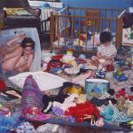

-

Giannascoli stacks many of his most accessible tracks early on, some of which are career highlights. Hope is a devastating recount on how he lost his friend to synthetic opioids—and yet he keeps the rhythm upbeat, maintaining a straightforward acoustic strum that follows his bittersweet vocal melody. The striding Southern Sky is the album's "Elliott Smith" moment, in the best sense of the term, a twangy waltz with a beautiful violin lead (courtesy of frequent collaborator Molly Germer) that oscillates around guest singer Emily Yacina's mellifluous delivery. There's a lot of variation from track to track, but Giannascoli applies a steady atmosphere to his well-structured arrangements without drifting off into the distance.
-

The album follows a narrative path, but so does each song. Rather than adhere to a particular formula, tracks ramble along, following imagery or emotional threads, but almost never adhering to a verse-chorus-verse pattern. You might feel like Callahan's making it all up as he goes along, and we're all getting stoned together and having those kinds of dream-conversations that last all night—but that's just because Callahan's craftspersonship makes these songs seem laid back and easy, when realistically, only a lifetime of wisdom and hard work yields music so engaging and vibrant.
-

None of Finn's nuance would work without an adept musical complement, but don't worry, Finn's band accentuates every gentle emotional move. As with his last album, a woodwind and horn section rounds out a traditional rock setup that channels Springsteen, sixties soul and especially Lambchop, and does so creatively and better yet, coherently. Finn's dropped-register, Elvis Costello-like spoken word melts the variety of songs into something whole, ensuring that by the end of the album we've been on a unified journey.
-

Down to the last reference, Paak’s recollection and retrospection of success is prevalent on the album. “Yada Yada” goes through the motions of the open mics, label problems and personal darker days. He rhetorically asks (“Does somebody got some shit to say?”) as he reaffirms his worth (“If they forget the dot, I’m chargin’ double for the purchase”). Callum and Kiefer’s production is sliced with funk and caressed with Paak’s saucy drumming.
-

Big, heavy drum fills punctuate the steady piano keys of album opener A Lot's Gonna Change, where a swooning Mering accepts that every passing complication seems moot in the grand scheme of things. Her deep, yet honeyed drawl—bearing a striking resemblance to Karen Carpenter's— adds a dramatic flair to the song's orchestral backdrop. Titanic Rising sounds positively spectral, and not just because she opted to title one of the tracks Andromeda; regardless, she looks to the sky for answers over a cosmic country style that sounds open, yet intimate. She fluidly transitions from the lithe psychedelic touches of 2016's Front Row Seat to Earth by applying a painterly—though no less natural—stroke to a well-remembered seventies FM radio sound.
-

Where his earlier work took a more experimental tone and was built around both samples and field music, his music has shifted gradually over time toward a more organic sound that arguably reaches new heights here. On Please Won't Please, an otherwise anxious beat is draped in glimmering synths and warm pianos. Steel drums appear towards the end of Imagining What To Do, as they add soft splashes of color to the gently plucked acoustics and breezy string section. Running begins with a gust of wind that gives way to a slow tumbling beat which carries a gorgeous melancholy piano refrain.
-
White Onions slides in as a reminder that Foals probably could release a 10-song album of straight-up indie rock bangers along the lines of Red Socks Pugie and Two Steps, Twice if they want to, while In Degrees is a song that revels in taking ridiculous turns. Sporting a funk bassline that leads to a chaotic conclusion—reminiscent of Remain in Light-era Talking Heads, it doesn’t sound like anything else in Foals’ catalog, but it might just better most of it.
-

The changes in Van Etten’s life are reflected on two of the strongest singles she’s ever written. Over the synth-heavy stomp of Comeback Kid, she sees her own life mirrored in the eyes of others. “Kid at the top of our street/I was somewhat like him, I was somebody,” she sings as the music propels forward. The powerful rhythms and synths of Seventeen would fit perfectly on Born in the USA, with Van Etten looking back at her time in New York City as a teenager. As she thinks about her younger self and all the good and bad in front of her, Van Etten gives an all-time great vocal performance, screaming out “I know that you're gonna be/You'll crumble it up just to see/Afraid that you'll be just like me.”
-

Tonal changes aside, those worried if Deerhunter have stepped away from their feverish art rock needn't worry. Futurism is one of their most sparkling tracks to date, as it enjoys one of those chromatic guitar riffs (accomplished with the assistance of White Fence's Tim Presley) they've been writing since their Microcastle days. And then there's the piano-led chug of What Happens to People?, a meditation on what it means to lose your goodwill which possesses one of their most textured soundscapes - Cox channels some of the languid allure of Nico from a performance standpoint, a more subdued, yet comparable take to the tight musicianship of fan favorites like Desire Lines and Nothing Ever Happens. There's something oddly bewildering about how Deerhunter subvert their wailing guitars with a muted, if classicist, technique.